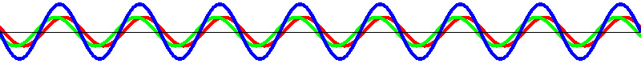

Stehende Welle
Wenn eine linkslaufende (grün) und eine rechtslaufende (rot) harmonische Welle überlagert werden, entsteht eine stehende Welle (blau):
sin(k·x+ω·t) + sin(k·x-ω·t) = 2·sin(k·x)·cos(ω·t)

Jene Stellen, wo sich gar nichts verändert, heissen Knoten. Die Bereiche dazwischen heissen Schwingungsbäuche. Der Abstand zweier Knoten ist eine halbe Wellenlänge.
Die linkslaufende harmonische Welle kann man sich aus einer Reflexion der rechtslaufenden Welle entstanden denken.
Zurück zur: Startseite, Instituts-Seite
last update: 7. Januar 2007/Lie.